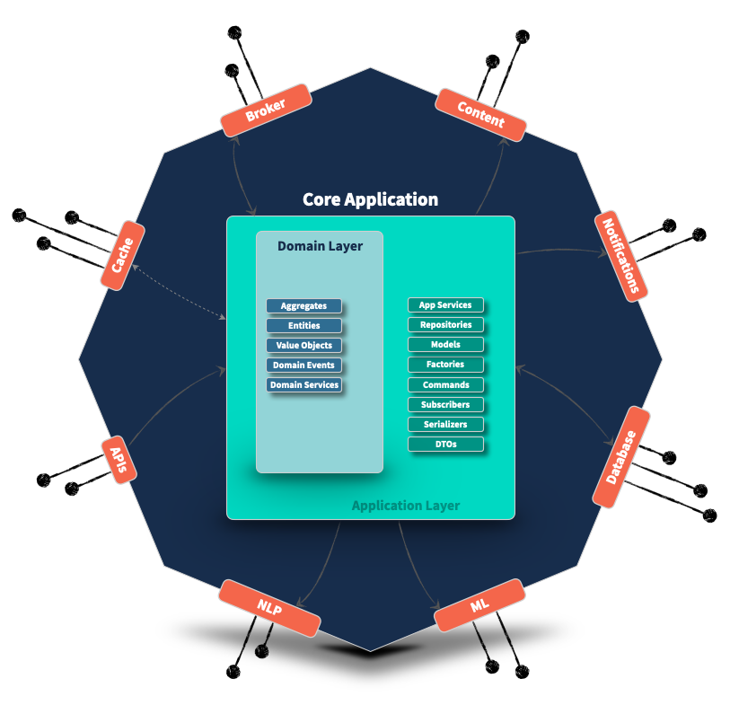

Pragmatic Framework for Ambitious Applications
Protean is an open-source python framework designed to build ambitious applications that scale and evolve with your business.
Overview

Protean helps you build applications architected for change and growth.
Protean offers the tools and patterns necessary for creating sustainable, domain-driven codebases, utilizing CQRS and Event-Sourcing to tackle complexity in high-stakes domains.
At its core, Protean adopts a Domain-Driven Design (DDD) approach to development, with support for patterns to succinctly and precisely express your domain without worrying about technology aspects. When you are ready, you can seamlessly plugin technologies like databases, message brokers, and caches, and Protean will take care of the rest.
Protean is loosely based on three paradigms:
- Service-Oriented: Develop your application as one or more subdomains that can run independently as Microservices
- Event-Driven: Use events to propagate changes across aggregates and subdomains to sync state within and across Bounded Contexts.
- Adapter-Based: A configuration-driven approach to specify technology adapters, with multiple adapters supported out of the box.
Features
-
Rapid Prototyping
Prototype and rapidly iterate your domain model with core DDD tactical patterns.
-
Technology Agnostic
Model your domain without worrying about technology choice. Delay your decisions until the last responsible moment.
-
Pluggable Adapters
Use a Configuration-based approach to specify your application's infrastructure. Decouple your application from your technology.
-
Multi-domain Codebase
Evolve and structure your application's bounded contexts over time as you understand better.
-
Event-centric Communication
Use Domain Events to sync state across Aggregates and Bounded contexts, creating a loosely-coupled, highly-scalable ecosystem.
-
100% Coverage
Completely cover your domain model with tests that can run in memory or with your chosen technlogies.